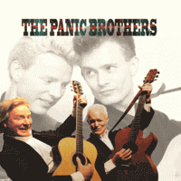

the Panic Brothers - The Panic Brothers (Album, 2015)
01 - Bivouac (1:45)
02 - No News (2:38)
03 - I Made A Mess Of A Dirty Weekend (3:21)
04 - Repo Man (3:08)
05 - Almost As Blue As Hank Williams (3:41)
06 - In Debt (2:00)
07 - Later Than You Think (2:25)
08 - I'm Broke In Everything But My Heart (3:24)
09 - The Late Late Picture Show (2:41)
10 - I've Forgotten What It Is That I Was Drinking To Forget (3:10)
11 - Hired Hand (1:40)
12 - Billy Ray (2:30)
© Special Delivery 1987 :: [SPM 1003] © Panic Records 2014 :: [PR001]
Notes
United Kingdom.
Reg Meuross - Acoustic guitar, Vocals
Richard Morton - Acoustic guitar, Vocals
Robin McKidd - Banjo
Ruari McFarlane - Electric bass, Double bass
BJ Cole - Pedal steel guitar
Martin Hughes - Percussion
Geraint Watkins - Piano, Accordion
Ed Korolyk - Violin, Viola
Clive Gregson - Electric guitar, Organ, Piano (on track 10)
Engineered by David Kenny. Produced by Clive Gregson
Tracks 11, 12 are recorded live At The Royal Albert, Deptford, May 1986
Tracks are written-by (or credited to) the Panic Brothers: 02, 09
Tracks are written-by Reg Meuross: 07, 10
Tracks are written by Richard Morton: 01, 03, 04, 05, 06, 08, 11, 12
My experience is based on its Digital release (2015, Homage To Fromage | © Topic Records Ltd 1987)
reference information: Discogs®
Review
353/366 (Project 366)
Great music based on two acoustic guitars and adorable vocals. When all this is also brightened up with other musical instruments (thanks to the support of great musicians) - it turns out to be just a masterpiece. To add to this general social lyrics, poetry, healthy humor, fair sense - this is already art. And considering the date of the original release - just a treasure!
So, it is open sound music with the main component in the form of Rock'n'Roll and Country Folk. However, some influences of general UK youth music, beat and power pop, general Pop Rock and Hillbilly are also quite a valuable part. In addition, vital part is the energy of rockabilly. The first track "Bivouac" is a really stunning opener. And also like the sixth track "In Debt", with power rockin' and rollin', high vibrant tone and shows songwriting passion. They are also close to two bonus tracks (live songs) that are straitghforward Rockabilly harmonies - "Hired Hand" and "Billy Ray". Lively and perky. While, the other two songs - the second "No News" and the seventh "Later Than You Think" - have a rather common tone of Rock music. Social lyrics with a casual mind (meaningful and eternal), so charming singing, so invigorating tune. Just a great piece of Pop Rock. More rustic things sound especially worthy. "I Made A Mess Of A Dirty Weekend" as a fine Country Folk Rock, and "Repo Man" as a vigorous Hillbilly Rock'n'Roll - thundering blend of lyrics and mighty tunes. Thanks to the topnotch arrangement, these are just superb songs. The very conceptual Country song "Almost As Blue As Hank Williams" is all on its title. The eighth track "I'm Broke In Everything But My Heart" with a bit nostalgic Rock and Honky Tonk modish tune. As always with very lyrics. The ninth song "The Late Night Picture Show" is a very great Country Folk (and its lightness and melody remind me of the Cactus Blossoms). Very so specific and heartfelt composition. With some kind of relief while listening. The ending of the album is more than beautiful and meaningful way - "I've Forgotten What It Is That I Was Drinking To Forget". With its piano accompaniment - so true sound.
Without overload, over emotional, vigorous, conceptual. Decently.